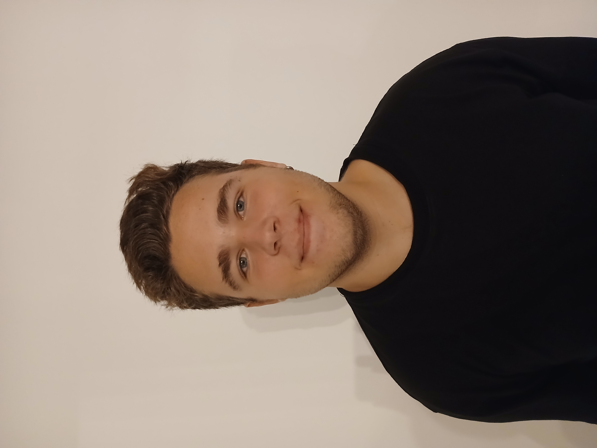

Aspir a ser un futur programador o desenvolupador d'aplicacions multiplataforma
No tenc experiència laboral. No he fet cap feina mai. Però estic bastant motivat per entrar dins el món laboral i acosneguir els meus beneficis
Educació i formació:
Tenc el títol de ESO fet en el col·legi Sagrats Cors de Sóller. També tenc el títol de batxillerat fet a l'IES Guillem Colom Casasnoves (Sóller) i actualment m'estic formant en el cicle de Desenvolupament d'Aplicacions Multiplataforma al CIFP Pau Casasnoves (Inca)
Idiomes:
Tenc un B2 acreditat de Català. Un B2 d'Anglès i un A2 d'Alemany. En general puc tractar bastants d'idiomes incloent l'Espanyol.
Certificacions:
Com a certificacions tenc les dels idiomes anteriors. També tenc el Certificat de consumidor reconegut com a expert d'artificis pirotècnics (CRE), a la informàtica no serveix molt però el tenc. Després tenc el certificat de dispensació responsable de begudes alcoholiques.
Enllaços d'interes:
Puc oferir el meu enllaç al perfil de GitHub i d'uns apunts de llenguatge de marques:
GitHub